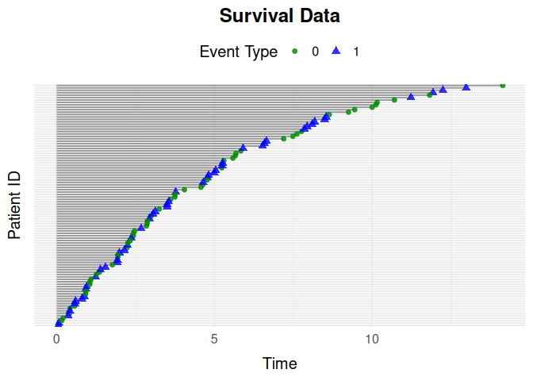

The simevent package provides tools for simulating and analyzing complex continuous-time health care data. The simulated data includes variables that can be interpreted as treatment decisions, disease progression, and health factors.
Installation
You can install the stable version of simevent from CRAN with:
install.packages("simevent")or the development version of simevent from GitHub using pak:
pak::pak("miclukacova/simevent")Usage
At the core of the package is the flexible function simEventData, which simulates event history data from a Cox proportional hazards model with Weibull hazards. Users specify the number of events, and their intensity parameters and covariate effects, to create custom scenarios. On top of this, the package provides:
- Wrapper functions for common settings, e.g.
simSurvData(survival data),simCRdata(competing risks),simDisease,simTreatment,simDropIn, andsimEventTV(time-varying effects). - Functions for simulating new data from a model already fitted to observed data:
simEventCox(Cox models) andsimEventObj(any model with apredict2method). -
plotEventDataandIntFormatDatafor plotting and reformatting simulated data. -
alphaSimandintEffectAlphafor performing and evaluating interventions on the shape parameter of a process.
A minimal example, simulating survival data for 100 individuals and plotting the event histories:
data <- simSurvData(100)
plotEventData(data, title = "Survival Data")
For a full walkthrough of the simulation framework and all of the functions above, see vignette("simevent").